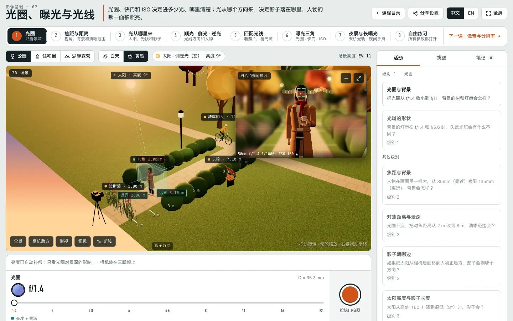
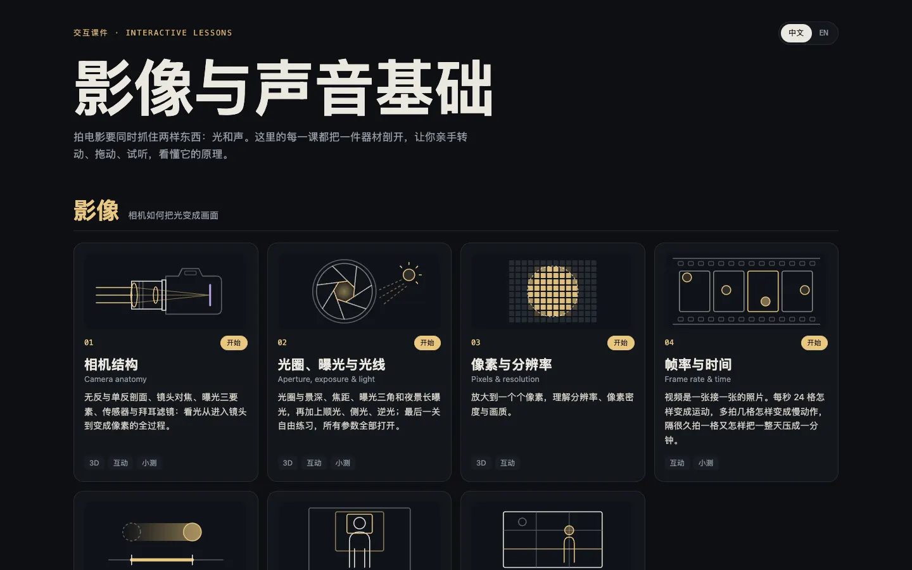
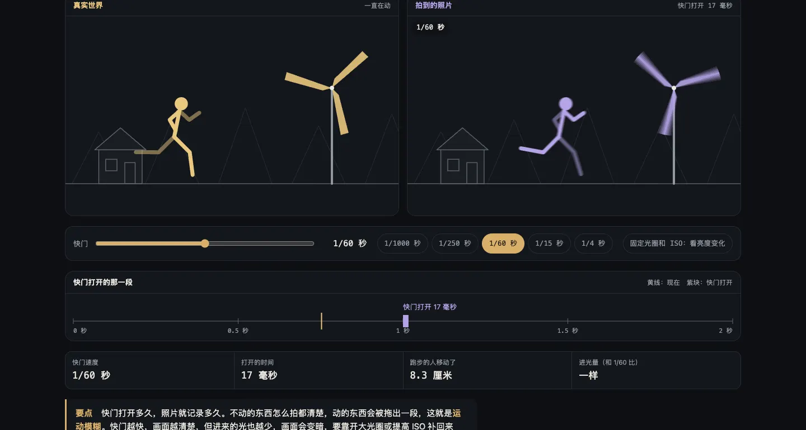
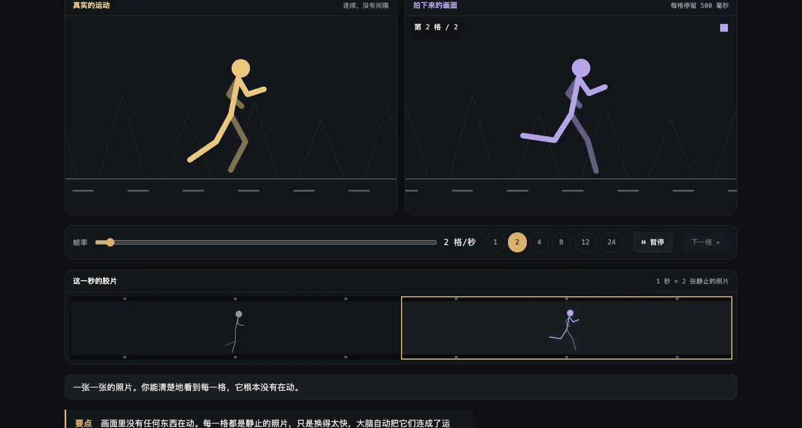
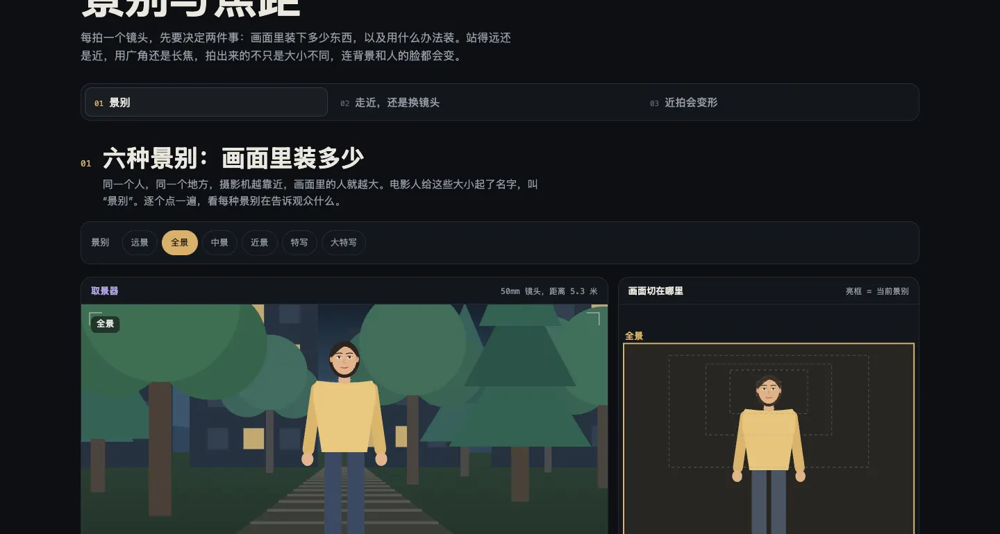
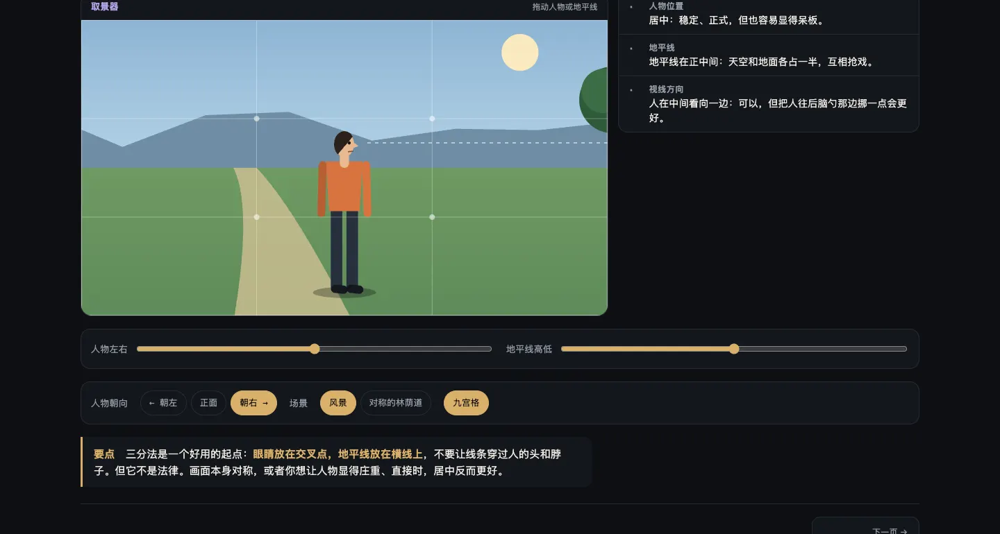
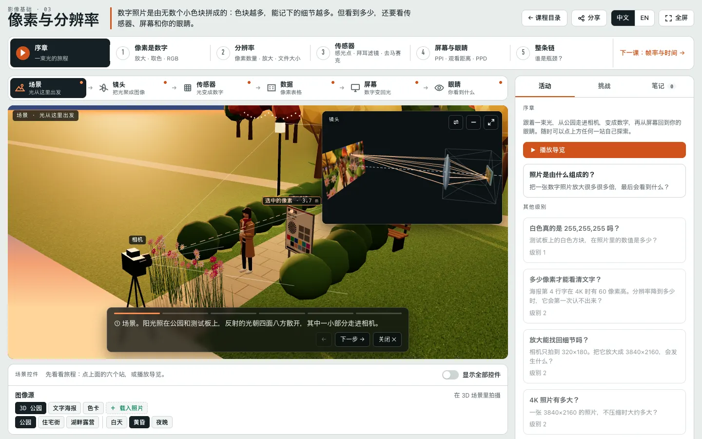
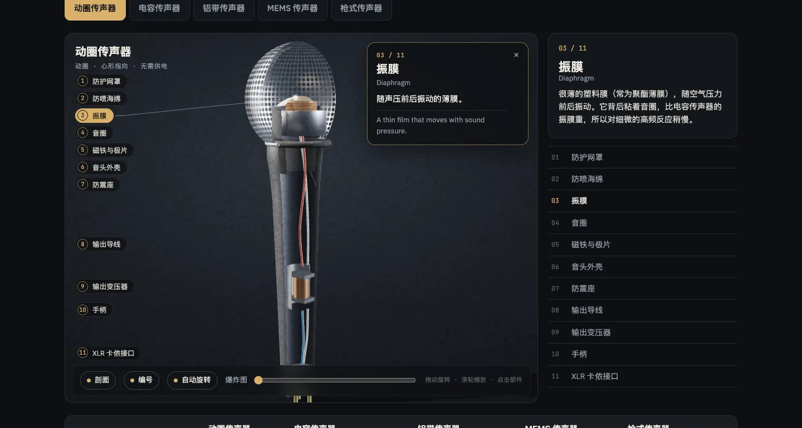
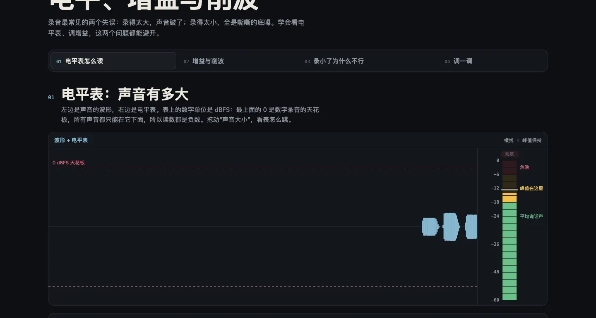
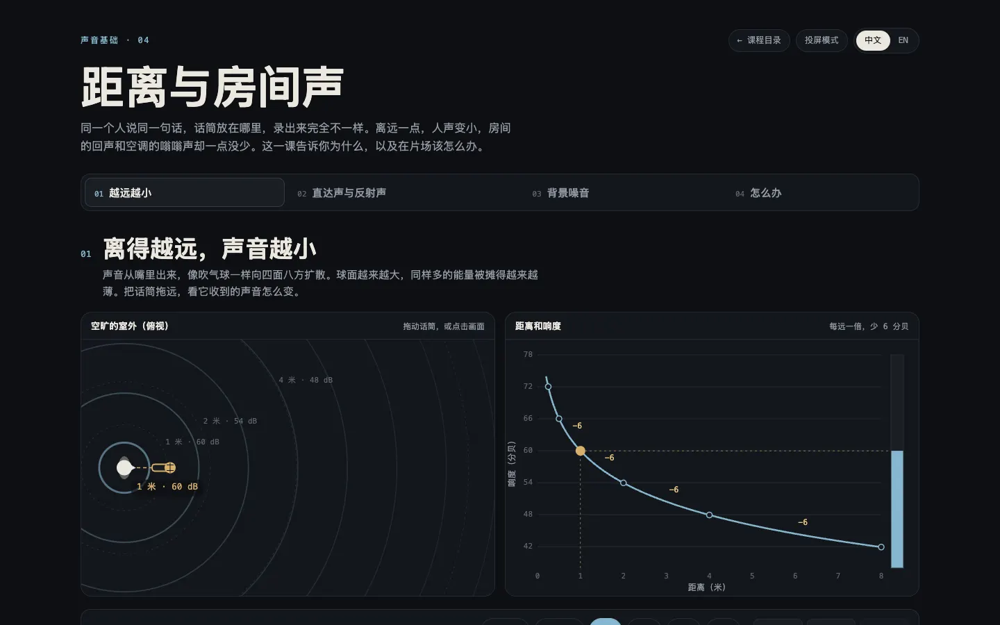

影像与声音课件Image & Sound Lessons
十一节交互课件，七节讲影像，四节讲声音。每一课都把一件器材剖开：光圈怎么改变景深，快门为什么会拖出影子，麦克风里面那片振膜怎么动，电平表为什么不能碰到 0。学生不用先听懂再动手，而是先动手，看见了，再去读那一句“要点”。
Eleven interactive lessons, seven on images and four on sound. Each one opens up a piece of gear so students can turn, drag and listen first, and read the rule afterwards.

- 课程
- 影像与声音基础
- 内容
- 影像 7 课 · 声音 4 课
- 形式
- 浏览器单文件，打开即用；中英双语，带投屏模式
- 做法
- three.js 搭 3D 场景，声音全部用 Web Audio 在浏览器里合成
在这里试一试Try it here
这是课上用的原版页面，没有删减。手机上建议横过来，或者单独打开。 单独打开这一页 ↗
每一课怎么走How a lesson goes
- 先看一样东西每一课只从一个现象开始：跑步的人被拍糊了，同一句话放远了听起来空。
- 一次只动一个参数只给一个滑杆。拖动它，左边是真实世界，右边是相机拍到的、麦克风录到的。
- 读一句要点看见之后，再用一两句话把规律说出来，配一道小测。
- 全部打开最后一关把所有参数一起交给学生，自己去拍一张、调一段。
课件里面Inside the lessons









为什么做Why I made it
这一届大一新生，学校没有再要求他们买相机。相机太贵了，一个班大概只有三四个人有。可光圈、景深、快门这些东西，光靠讲是讲不明白的；就算拿着相机去拍，也不是每个人都有大光圈镜头，拍完再导进电脑里看，一节课就过去了。
所以我干脆把相机搬到了网页上。第一个试的是光圈，做出来一看效果特别好，就把教案里的内容一课一课都做成了这样的交互课件。后来上专业英语课，学生说想“看得见”话筒里面是怎么工作的，一周之内，五种话筒的剖面图就有了。
我之前有尝试去讲光圈，讲光圈带来的影响和景深的影响，都不够直观。……所以我就直接在这个页面上展示。这里面还有一个挑战环节，就是让他们自己对着这个画面，把这样的一个状态给调出来。这个班现在大概只有三四个人有相机，我觉得在没有相机的情况下，这已经是很棒的一种呈现了。
语音日记 · 2026.10.19
有一次课上，一个学生问我，AI 提示词里写的“35 毫米”是什么意思。那一刻我意识到，AI 时代的影像创作，仍然吃基本功。把这些基本功讲清楚，是我的责任。
怎么做的How it is built
每一课是一个独立的 HTML 文件，样式、脚本、模型都在里面，放到任何服务器上都能打开。3D 场景用 three.js，声音全部用 Web Audio 实时合成，不放录音文件。课件用自然语言和 AI 一起写成，我负责讲什么、先讲什么、学生会在哪里卡住；每一课都先在课上用过，再根据学生的反应改。